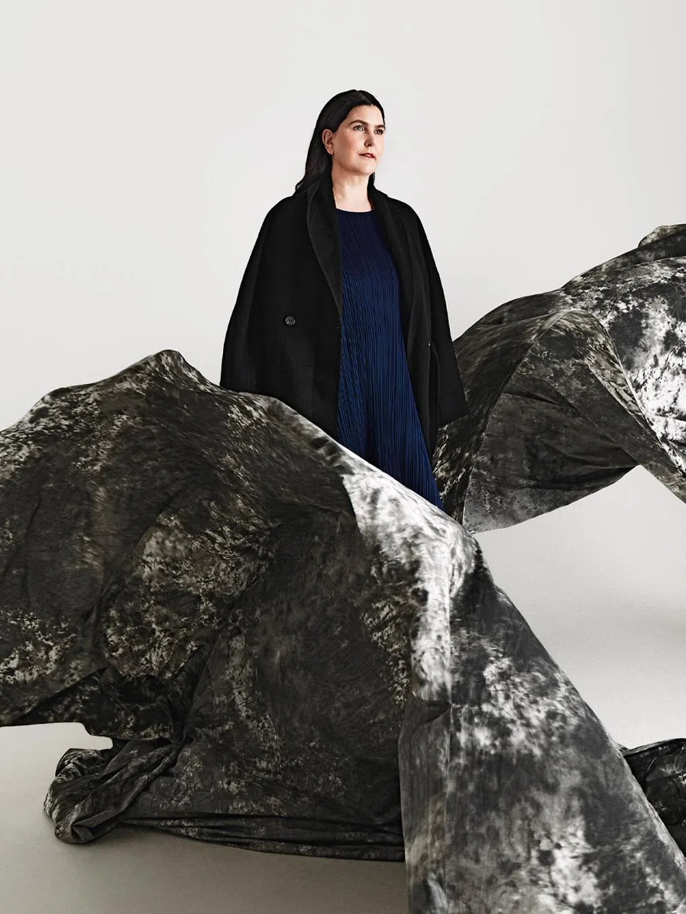

I am a curator of possible worlds, working at the intersection of art, science, and futures thinking. Originally from New Zealand and now based in Singapore, I am Director of the ArtScience Museum, where I lead a programme shaped by interdisciplinary research and public engagement.
My work is driven by a commitment to make the world a better place through culture and science, expanding how we imagine, understand, and act within possible futures. My practice is grounded in the conviction that artists working at the edge of technology offer an early signal of where society is heading. I work by convening, catalysing, and creating the conditions for collaboration, bringing together artists, scientists, technologists, and thinkers across disciplines.
Alongside my institutional work, I collaborate with cultural organisations, technology companies, and environmental initiatives to develop projects that move audiences emotionally while producing measurable environmental and social impact. My work focuses on making complex systems perceptible — from quantum phenomena to planetary change — and on shaping cultural platforms as sites where possible futures can be sensed, tested, and collectively imagined.